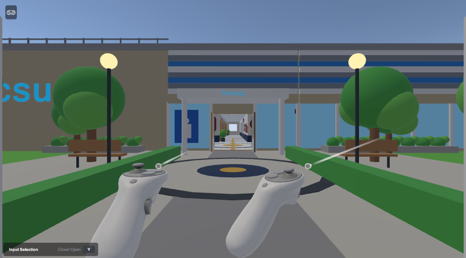
| Fecha de medición | 9 de noviembre de 2026 |
| Escena | Assets/Scenes/Acto1.unity |
| Perfil medido | Quality «Low» → Performance URP Config |
| Equipo | AMD Ryzen 7 5700G · AMD Radeon Graphics · Direct3D 11 |
| Entregable | Ejercicio 1 (Diagnóstico) + Ejercicio 2 (Optimización) |
Se diagnosticó el frame de Crisis VR con el Frame Debugger y el Render Graph Viewer y se evaluaron dos optimizaciones de alto impacto y bajo riesgo: Occlusion Culling (datos Umbra horneados) y Dynamic Batching en el asset URP del perfil Performance. Se midieron 6 poses × 4 configuraciones × 2 repeticiones (60 cuadros por celda tras 20 de calentamiento), alternando el orden de configuraciones en la segunda repetición.
| Unity / target | 6000.3.9f1 · Android activo (medido en Editor/PC) |
| GPU / API / CPU | AMD Radeon Graphics · Direct3D 11 · Ryzen 7 5700G |
| Game view | 910×505 · vSync = 1 · targetFrameRate = -1 |
| Quality medido / restaurado | Low / Ultra (original restaurado tras la medición) |
| URP asset medido | Performance URP Config (SRP Batcher on, MSAA 4×, HDR off, sin renderer features) |
| Calentamiento / muestras | 20 cuadros / 60 cuadros por celda · 2 repeticiones (la 2.ª invierte el orden) |
| Cfg | Occlusion Culling | Dynamic Batching | Descripción |
|---|---|---|---|
| A | OFF | OFF | Línea base (antes) |
| B | ON | OFF | Solo oclusión |
| C | OFF | ON | Solo dynamic batching |
| D | ON | ON | Optimizado (después) — es el estado actual del proyecto |
| Pose | Posición (x, y, z) | Yaw |
|---|---|---|
| P1 Exterior, spawn mirando a la fachada | (39,50; 0,02; −7,00) | 270° |
| P2 Vestíbulo mirando al pasillo | (21,00; 0,02; −7,00) | 270° |
| P3 Pasillo medio | (8,00; 0,02; −7,00) | 270° |
| P4 Aula: participante (asiento) | (0,00; 0,00; −0,20) | 0° |
| P5 Aula: participante mirando atrás | (0,00; 0,00; −0,20) | 180° |
| P6 Exterior mirando hacia afuera (control) | (39,50; 0,02; −7,00) | 90° |
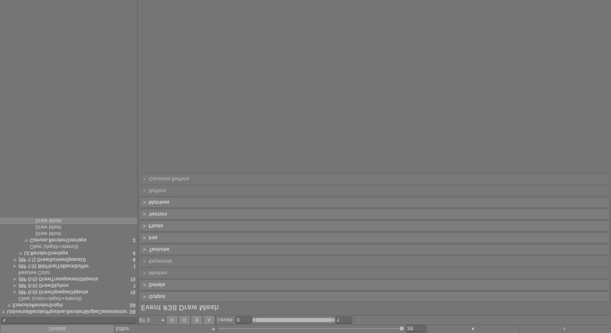
| Fase / render pass | Eventos | Draw calls | Observación |
|---|---|---|---|
| DrawOpaqueObjects (RP 0:0) | 15 | 257 | 247 URP/Lit, 8 URP/Unlit, 2 Shader Graph Unlit_Fresnel |
| DrawSkybox | 1 | 1 | Skybox/Procedural (5 040 vértices) |
| DrawTransparentObjects (RP 0:0) | 15 | 16 | 14 TextMeshPro Mobile Distance Field, 2 de partículas |
| BlitFinalToBackBuffer (RP 1:0) | 1 | 1 | Hidden/Universal/CoreBlit, 1 triángulo |
| DrawScreenSpaceUI (RP 1:1) | 3 | 3 | UI/Default, Canvas Screen Space Overlay (108 + 100 + 4 vértices) |
Los contadores del frame completo en P1/D son 277 draw calls, 223 batches y 20 SetPass; de los draw calls, 225 son static batched y 4 dynamic batched.
| Causa | Eventos | Dónde aparece |
|---|---|---|
| SRP: Node have different shaders | 10 | Cola opaca: alternancia URP/Lit ↔ URP/Unlit |
| SRP: First call from ScriptableRenderLoopJob | 3 | Inicio de los grupos del SRP Batcher (normal) |
| SRP: Node is not compatible with SRP batcher | 3 | Unlit_Fresnel (Shader Graph) y TMP Mobile Distance Field |
| Dynamic Batching off / disabled to avoid z-fighting | 1 | Cola transparente (TMP) |
| Unknown reason | 21 | Mayoría: textos TMP uno a uno, skybox, blit y UI (Unity no informa la causa) |
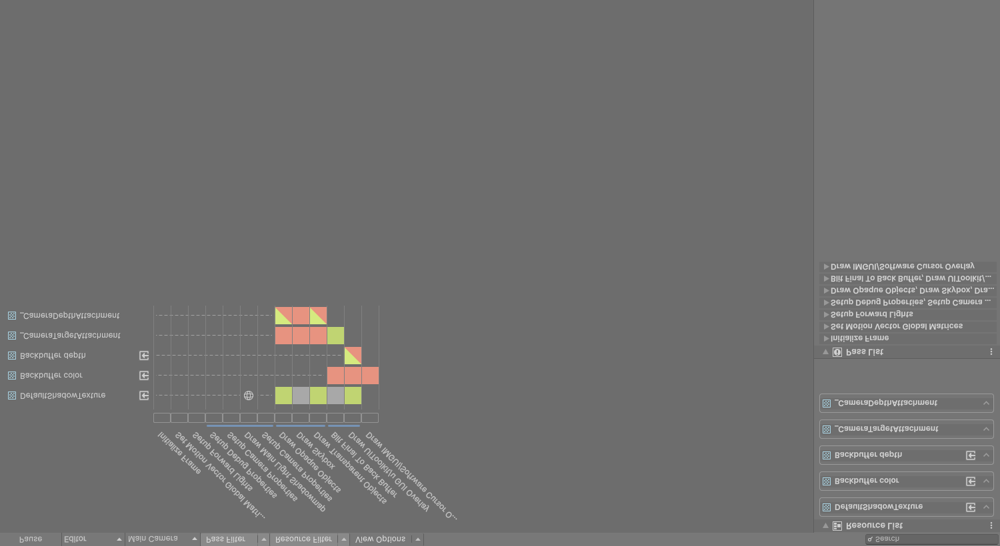
| Elemento | Resultado |
|---|---|
| Render passes | RP 0 (opacos + skybox + transparentes sobre el color attachment) y RP 1 (blit final + UI overlay) |
| Render target principal | _CameraTargetAttachment 910×505, RGBA8 sRGB, MSAA 4× |
| Blits | 1: BlitFinalToBackBuffer (hacia GameView RT) |
| Copias de color (CopyColor / Opaque Texture) | Ninguna (supportsCameraOpaqueTexture = false; sin evento de copia) |
| Copias de profundidad / _CameraDepthTexture | Ninguna (supportsCameraDepthTexture = false; sin evento CopyDepth ni depth prepass; Depth Priming = Disabled) |
| PostFX | Ninguno (sin renderer features, HDR off, sin pasos de post-proceso en el frame) |
| Sombras | 0 shadow casters en todas las poses (métrica shadowCasters = 0) |
| Ítem | Estado | Evidencia |
|---|---|---|
| Draw calls medidos | OK | P1: 504 (A) → 277 (D); control P6: 40 |
| SetPass calls | OK | P1: 32 (A) → 20 (D) |
| Batches | OK | P1: 426 (A) → 223 (D) |
| SRP Batcher activo | OK | useSRPBatcher = true; 13 de 15 eventos opacos van por DrawSRPBatcher |
| Static batching aprovechado | OK | 225 de 277 draw calls son static batched (P1/D) |
| Dynamic batching | OK | Activado en Performance URP Config; hasta 80 draws dynamic batched (P1/C) |
| Geometría oculta renderizada | REVISAR | Sin oclusión P1 dibuja 132 084 triángulos; con oclusión 89 936 |
| Rupturas por cambio de shader | REVISAR | 10 eventos «Node have different shaders» (alternancia Lit/Unlit) |
| Shaders incompatibles con SRP Batcher | REVISAR | Unlit_Fresnel (Shader Graph) y TMP/Mobile/Distance Field |
| Transparencias | REVISAR | 16 draw calls (5,8 % del frame): 14 TMP + 2 partículas, sin agrupar |
| UI | OK | 3 draw calls UI/Default en Screen Space Overlay |
| Copias de color | OK | Ninguna |
| Copias de profundidad / _CameraDepthTexture | OK | No se genera (flag desactivado, sin evento) |
| Blits intermedios | OK | Solo el blit final obligatorio |
| PostFX | OK | Ninguno activo |
| MSAA | REVISAR | 4× sobre target intermedio; coste a vigilar en Quest |
| Sombras | OK | 0 casters |
Desde el exterior (P1) la configuración sin oclusión emite 504 draw calls y 132 084 triángulos, mientras que con oclusión bastan 278 draw calls y 89 936 triángulos para la misma imagen. Cerca del 45 % de los draw calls de esa pose correspondían a geometría tras la fachada. Palanca elegida: Occlusion Culling (O1).
En la cola opaca, 10 de 15 eventos se rompen por «different shaders»: 8 draw calls URP/Unlit se intercalan entre 247 de URP/Lit. Además, Unlit_Fresnel (2 draw calls) y los textos TextMeshPro (14 draw calls transparentes, uno por objeto) no son compatibles con SRP Batcher. Palanca aplicada: Dynamic Batching para mallas pequeñas (O2). Palanca propuesta, no aplicada por riesgo medio: ordenar o unificar materiales Lit/Unlit y consolidar textos TMP.
No hay CopyColor, CopyDepth, _CameraDepthTexture ni PostFX en el frame: no existen copias costosas que eliminar. El frame se compone de dos render passes, con un color attachment MSAA 4× de 910×505 y un único blit final. Conclusión: el margen restante está en draw calls y MSAA, no en pasadas auxiliares. Riesgo a documentar: si en el futuro se activa Depth Texture (p. ej. por soft particles o efectos de profundidad), URP añadirá un paso de copia de profundidad.
| # | Optimización | Impacto | Riesgo | Cómo se validó |
|---|---|---|---|---|
| O1 | Occlusion Culling: datos Umbra horneados (40 960 B) y Use Occlusion Culling activo en Main Camera | Alto en exterior y vestíbulo, solo con oclusión: P1 −45 % y P2 −10 % de draw calls | Bajo: sin cambio visual; hay que re-hornear si cambia la geometría estática | 6 poses A/B/C/D; diferencia de píxeles ≤ 0,002 %; interacciones idénticas |
| O2 | Dynamic Batching activado en Performance URP Config | Medio, solo con dynamic batching: de −14 % (P1) a −21 % (P3) de draw calls; hasta 80 draws agrupados | Bajo: solo agrupa mallas pequeñas (coste de CPU por vértices acotado) | Mismas pruebas; sin cambios en SetPass |
| Pose | A base | B +Occlusion | C +DynBatch | D optimizado | Δ A→D |
|---|---|---|---|---|---|
| P1 Exterior, fachada | 504 | 278 | 433 | 277 | −45,0 % |
| P2 Vestíbulo → pasillo | 403 | 363 | 333 | 292 | −27,5 % |
| P3 Pasillo medio | 341 | 341 | 271 | 271 | −20,5 % |
| P4 Aula (asiento) | 73 | 73 | 62 | 62 | −15,1 % |
| P5 Aula, mirando atrás | 147 | 138 | 147 | 138 | −6,1 % |
| P6 Exterior (control) | 40 | 40 | 40 | 40 | 0,0 % |
| Pose | A base | B +Occlusion | C +DynBatch | D optimizado | Δ A→D |
|---|---|---|---|---|---|
| P1 Exterior, fachada | 426 | 224 | 355 | 223 | −47,7 % |
| P2 Vestíbulo → pasillo | 348 | 320 | 278 | 249 | −28,4 % |
| P3 Pasillo medio | 290 | 290 | 220 | 220 | −24,1 % |
| P4 Aula (asiento) | 68 | 68 | 57 | 57 | −16,2 % |
| P5 Aula, mirando atrás | 111 | 102 | 111 | 102 | −8,1 % |
| P6 Exterior (control) | 36 | 36 | 36 | 36 | 0,0 % |
| Pose | A base | B +Occlusion | C +DynBatch | D optimizado | Δ A→D |
|---|---|---|---|---|---|
| P1 Exterior, fachada | 32 | 20 | 32 | 20 | −37,5 % |
| P2 Vestíbulo → pasillo | 26 | 24 | 26 | 24 | −7,7 % |
| P3 Pasillo medio | 24 | 24 | 24 | 24 | 0,0 % |
| P4 Aula (asiento) | 10 | 10 | 10 | 10 | 0,0 % |
| P5 Aula, mirando atrás | 8 | 8 | 8 | 8 | 0,0 % |
| P6 Exterior (control) | 7 | 7 | 7 | 7 | 0,0 % |
| Pose | A base | B +Occlusion | C +DynBatch | D optimizado | Δ A→D |
|---|---|---|---|---|---|
| P1 Exterior, fachada | 132 084 | 89 936 | 132 084 | 89 936 | −31,9 % |
| P2 Vestíbulo → pasillo | 89 116 | 59 044 | 89 116 | 59 044 | −33,7 % |
| P3 Pasillo medio | 68 301 | 68 301 | 68 301 | 68 301 | 0,0 % |
| P4 Aula (asiento) | 21 709 | 21 685 | 21 709 | 21 685 | −0,1 % |
| P5 Aula, mirando atrás | 59 121 | 45 081 | 59 121 | 45 081 | −23,7 % |
| P6 Exterior (control) | 18 423 | 18 423 | 18 423 | 18 423 | 0,0 % |
| Pose | Frame A (ms) | Frame D (ms) | Δ | GPU A (ms) | GPU D (ms) | Δ |
|---|---|---|---|---|---|---|
| P1 Exterior, fachada | 11,69 | 9,50 | −18,7 % | 2,18 | 1,97 | −9,7 % |
| P2 Vestíbulo → pasillo | 9,98 | 9,12 | −8,6 % | 1,85 | 1,77 | −4,6 % |
| P3 Pasillo medio | 12,07 | 10,81 | −10,4 % | 2,06 | 1,94 | −6,0 % |
| P4 Aula (asiento) | 9,04 | 8,89 | −1,7 % | 1,54 | 1,60 | +3,9 % |
| P5 Aula, mirando atrás | 9,38 | 9,35 | −0,3 % | 1,79 | 1,83 | +2,2 % |
| P6 Exterior (control) | 8,68 | 9,81 | +12,9 % | 1,46 | 1,47 | +0,5 % |
Capturas del Game view (910×505) en cada pose: izquierda configuración A (antes), derecha configuración D (después).

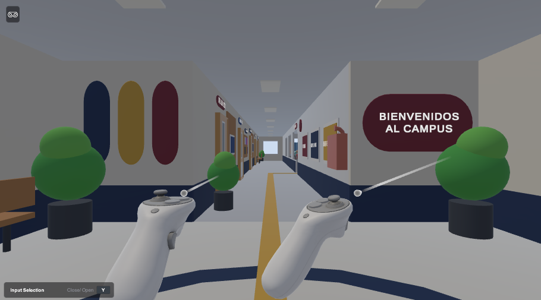
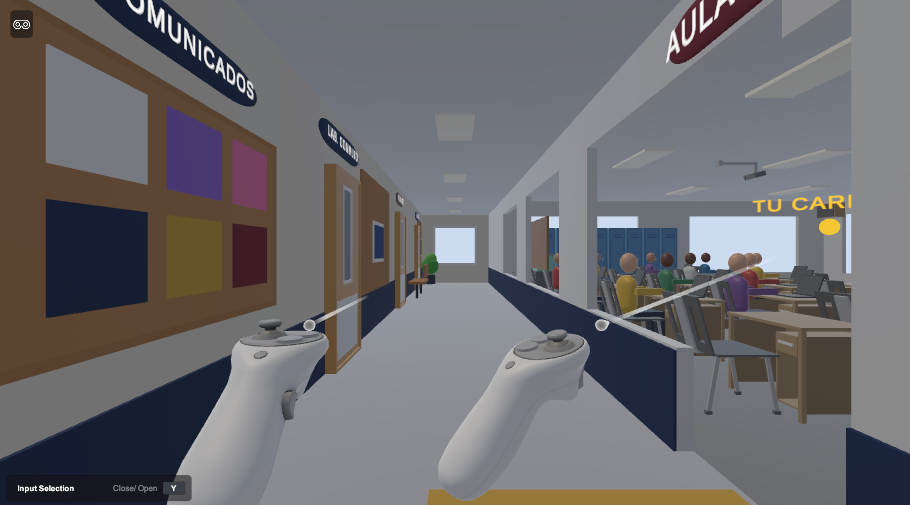
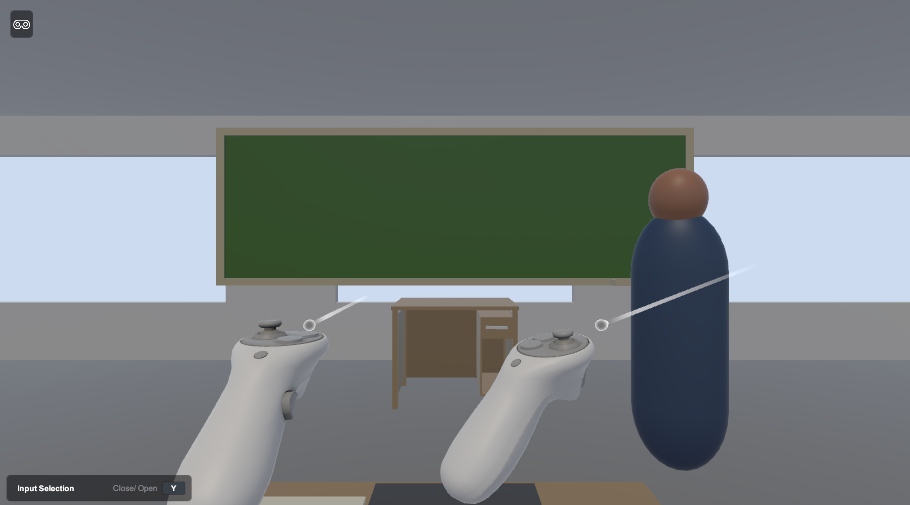
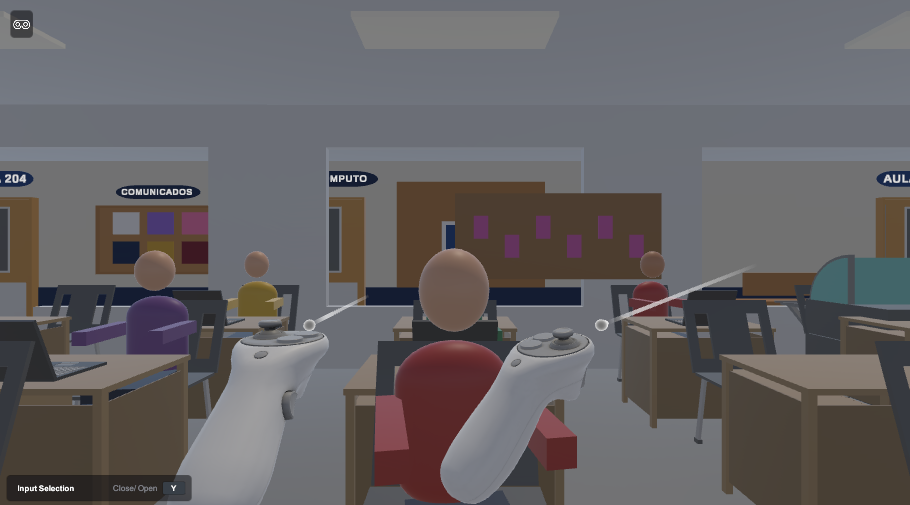


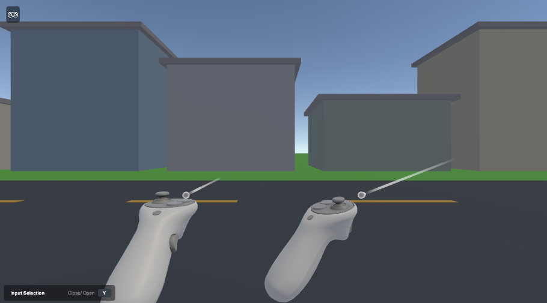
| Par | Diferencia media (0–255) | Píxeles con diferencia > 16 | Diferencia máxima |
|---|---|---|---|
| P1 | 0,000 | 0,000 % | 0 |
| P2 | 0,000 | 0,000 % | 25 |
| P3 | 0,000 | 0,001 % | 32 |
| P4 | 0,000 | 0,001 % | 36 |
| P5 | 0,000 | 0,000 % | 0 |
| P6 | 0,000 | 0,000 % | 0 |
| I1 tapa 60° | 0,000 | 0,000 % | 1 |
| I2 laptop | 0,000 | 0,000 % | 22 |
| I2 teclado | 0,001 | 0,002 % | 75 |
P1, P5 y P6 son idénticas byte a byte. En las demás, las diferencias afectan a unos pocos píxeles (el máximo, 75 niveles, ocurre en el teclado, con ≤ 0,002 % de píxeles).
Ejecutada con el XR Interaction Simulator (sin visor ni mandos reales) en la pose del participante. Resultados idénticos en ambas configuraciones:
| Vista | Cfg | Batches | Draw calls | SetPass | Triángulos | Dyn. batched |
|---|---|---|---|---|---|---|
| Laptop | A | 194 | 201 | 23 | 22 429 | 2 |
| Laptop | D | 123 | 130 | 23 | 22 417 | 77 |
| Teclado | A | 194 | 201 | 23 | 22 429 | 2 |
| Teclado | D | 124 | 131 | 23 | 22 429 | 77 |
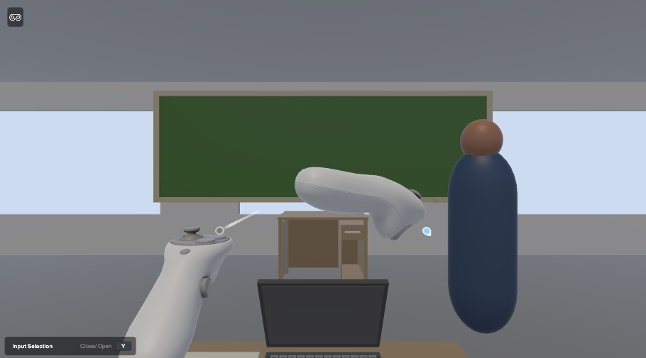
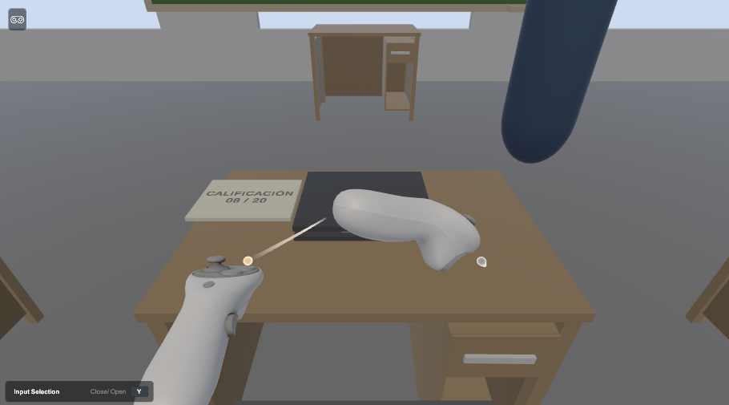
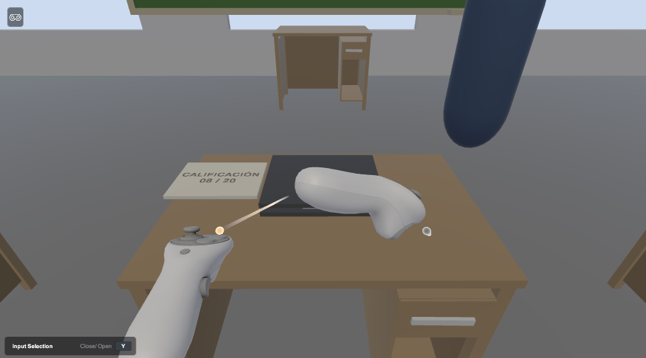
| Prueba | Corrida 1 | Tras la corrección |
|---|---|---|
| G01_AgarreConSimulador | OK | — |
| E01_CargaMainMenu_SinExcepciones | OK | — |
| E02_CargaAct1_SinExcepciones | OK | — |
| E03_CargaTutorial_SinExcepciones | OK | — |
| S07_RayoYGatillo_BotonActivoEInactivo | OK | OK (con S01) |
| S01_SesionCompleta_Corregir_PlanNuevo_A | FALLA | OK (aislada, 2 de 2) |
| S02_SesionCompleta_NoActua_SinAccion_D | OK | OK (regresión) |
| S03_PausaCongelaEspera_Y_TerminarSesionEnActo2 | OK | — |
| S04_VeinticuatroCombinaciones_ReporteCoincide | OK (24/24) | No repetida |
| S05_RecordatorioActo3_NoRegistra | OK | — |
| S06_PausaMitadDialogo_SigueMismoPunto | OK | — |
Fallo de S01: MissingReferenceException de un CanvasGroup destruido en Yarn.Unity (FadeAlphaAsync). Causa raíz: contaminación entre pruebas; S07 deja la escena Act1 con un fundido de Yarn en curso y el LoadScene de S01 destruye el CanvasGroup. La traza cae en el paquete Yarn Spinner, no en código de CrisisVR. Corrección: solo en el helper de prueba AislarEscenaCargada (detiene el DialogueRunner y espera a que termine antes de descargar la escena); no se tocó código de runtime ni el paquete, y no se usó LogAssert.Expect ni ignoreFailingMessages. El archivo original se conserva como CrisisVRSessionPlayTests.cs.ANTES_S01.txt.
lab12_metrics.csv — métricas por pose, configuración y repeticiónlab12_framedebugger_eventos.csv — 38 eventos del Frame Debuggerlab12_entorno.txt, lab12_interacciones_A.txt, lab12_interacciones_D.txt, lab12_playmode_resultados.txtshots/ — capturas D1, P1–P6 (A/B/C/D) e I1/I2 (A/D)